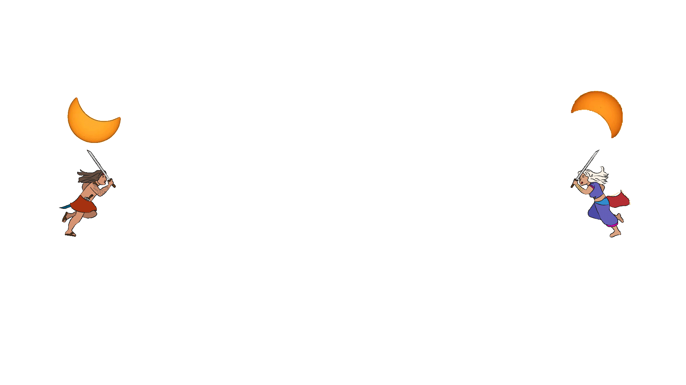
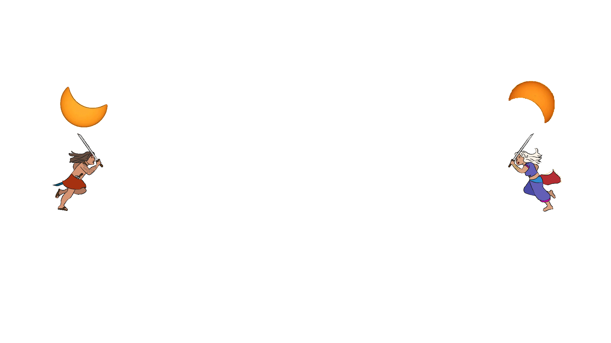

Mayari Had two charming sisters. She is the sister of Hanan, goddess of the morning, and Tala, the goddess of stars. They were said to be the daughters of Bathala by a mortal wife who died after giving birth to the three beautiful goddesses. However, in some mythology, Tala is Mayari's daughter.
Mayari also have a brother named Apolaki, the god of the sun. They were all given their own attributes by their father.
(There are some variations to this. In some sources it was only Mayari, Tala and Apolaki, others it was all 3 goddesses, there's also Hanan)

Bathala
Also known as "Maykapal" or "Abba", the highest ranking god, creator of all things.
Read More

Apolaki
Also known as "Adlaw", the god of sun and war, also the patron of the mandirigma.
Read More

Hanan
The goddess of the morning or dawn. She is the 2nd daughter of Bathala. She is not mentioned in some versions.
Read More

Mayari
The Goddess of Combat, War, Revolution, Hunt, Weaponry, Beauty, Strength, Moon and Night.
Reload Page

Tala
The goddess of the stars. Her origin story varies by region. Some of it are close parallels to non-Filipino cultures.
Read More

 
